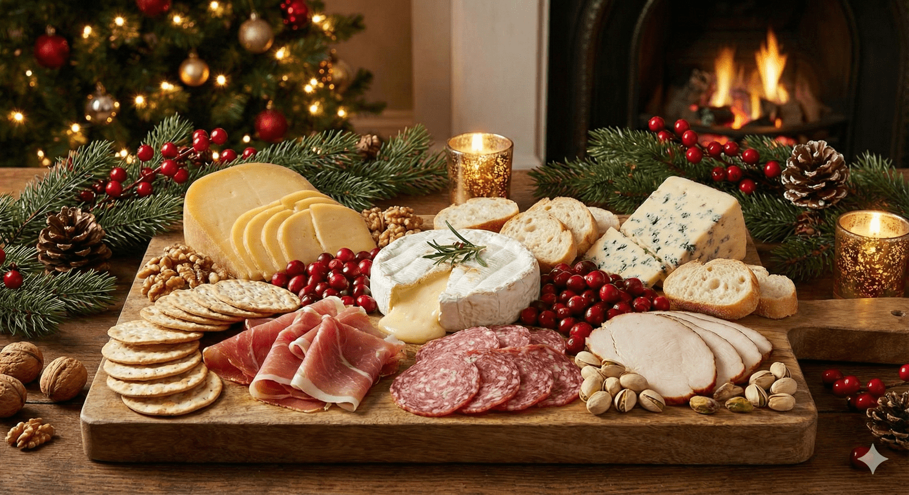

El plato estrella
Pollo Entero Navideño
⏱ 1h 20m
👥 6-8 Porciones
🔥 Fácil
🛒 Lista de Compras
- 1 Pollo entero (2-2.5kg)
- El Rub: 3 c/das de Mantequilla, 1 c/da de mostaza, 1 c/da de paprika, 1 c/dita de ajo/cebolla en polvo, 1 c/dita de orégano.
- Relleno: 1 Limón, 4 dientes de ajo, 1 ramita de romero o tomillo (opcional).
- Sabor: 1 taza de Caldo de pollo, 1/2 taza de Vino blanco (o jugo naranja).
- Dorado Final: 2 c/das de Miel.
👩🍳 Preparación
- Spa del pollo: Lava, seca y mete mantequilla debajo de la piel de la pechuga suavemente.
- Sazón: Unta la mezcla (El Rub) por todos lados. Rellena el interior del pollo con el limón y el romero.
- Horno: 200°C por 1h 10min con el caldo y vino blanco en una bandeja.
- Dorado: Pincela con miel y 1 chorrito del jugo de la bandeja los últimos 10 min.
💡 Tip de Fafa: "Cada 20 minutos baña el pollo con sus propios jugos. ¡Queda como de restaurante!"
Acompañantes: Pure de papas y ensalada fresca.
Salado & Dulzura
🥣 Dip Navideño Cremoso con Jamón y Pimentón
80 gr. Queso crema + 2 c/das de Mayonesa + 2 c/das de Crema de leche + 2 c/das de Jamón picado + 1 c/da de Pimentón rojo picado, Ajo en polvo, Sal, pimienta.
Mezcla todo hasta obtener una mezcla cremosa, decora con perejil y sirve con galletas saladas, tostadas o pancitos. ¡Listo en 12 minutos! - Perfecto para Compartir
"Déjalo enfriar antes de servir para más sabor."
🍰 Copa Tres Leches con Especias
- Base de ponqué o galletas María en un vasito.
- Bañar con una mezcla de Tres Leches(1 taza crema de leche, 1/2 taza de leche condensada y 1/2 taza de leche entera) + especias (1 c/dita canela, 1 chorrito de vainilla, 1 pizca de nuez moscada).
- Agrega una Capa de crema Chantilly.
- Repetir y decorar con cacao o canela y fresas.
"Usa vasos transparentes para que se vea elegante y bonito."
Extra
Tabla de Quesos Perfecta

1. Quesos 🧀
Semiduro: Gouda/Edam/tilsit (150 gr.)
Cremoso: Brie/Camembert (1 rueda pequeña)
Fuerte: Azul/Roquefort/Gorgonzolá (80 gr.)
Untar: Queso crema o similar (100 gr.)
Tip: Corta en cubos y triángulos variados.
2. Charcutería 🍖
Jamón serrano, Salami o pepperoni y Pechuga de pavo o Jamón artesanal.
Tip: Haz rositas con el salami y rollitos con el Jamón.
3. Acompañantes 🥖
Galletas saladas, Baguette en rodajas, tostadas de ajo, 1/4 de taza de Nueces y Arándanos secos, pistachos opcionales.
4. Decoración 🌿
Ramitas de Romero y arándanos frescos, estrellitas de galleta o de queso, pepinillos, Miel y Mermelada roja o de frutos rojos.
✨ Secreto de Montaje:
"No dejes espacios vacíos. Llena los huecos con frutos secos."
¡Feliz Navidad!